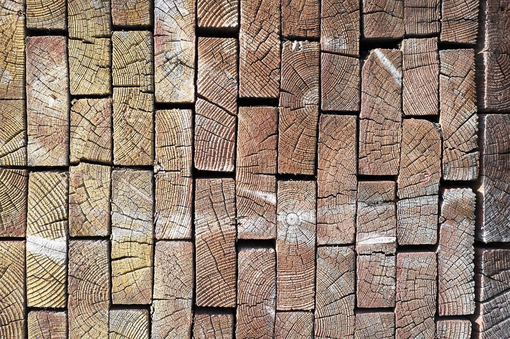

No.04 / 店のこと
店のこと
お店について確認できているのは、所在地・電話番号・Instagramのアカウントだけです。
このページの「想像してみる」部分は、制作側が想像して書いたものです。お店の実際の様子・考え・メニューとは関係がありません。
確認できていること
- 店名は「kedi cafe」、業種はカフェ
- 所在地は岐阜県郡上市白鳥町六ノ里１７８１−１(〒501-5112)
- 電話番号は090-5115-6276
- 営業時間・定休日・メニュー・価格・ご予約・駐車場は準備中

かけなおしの一本
想像してみる
由来は分かりません。制作側は、電話番号が載っているお店なら、気になったときに一本かけて確かめられるかもしれない、と想像しました。かけ直しの連絡も、Instagramののぞき見も、どちらも気軽にできる入口になりそうです(実際のお店の姿ではありません)。

